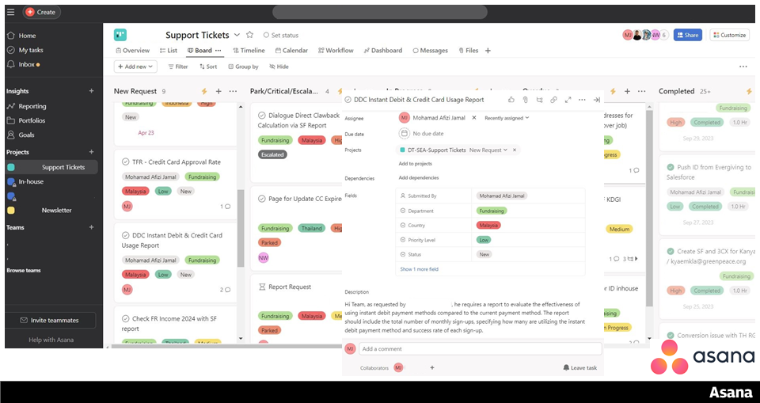
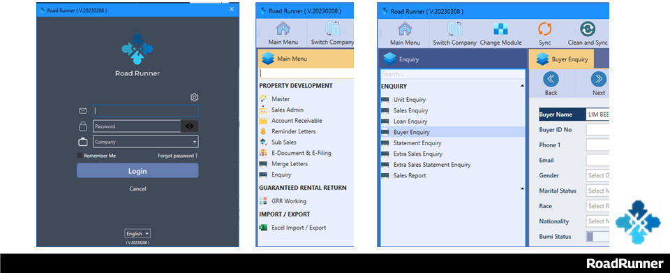
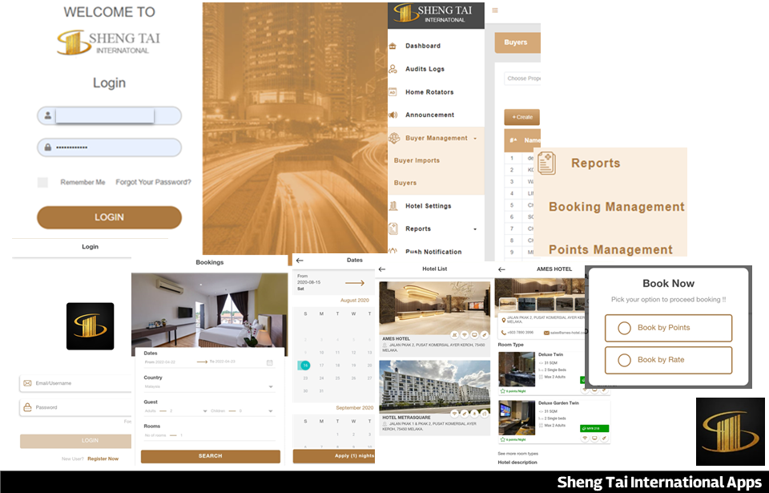
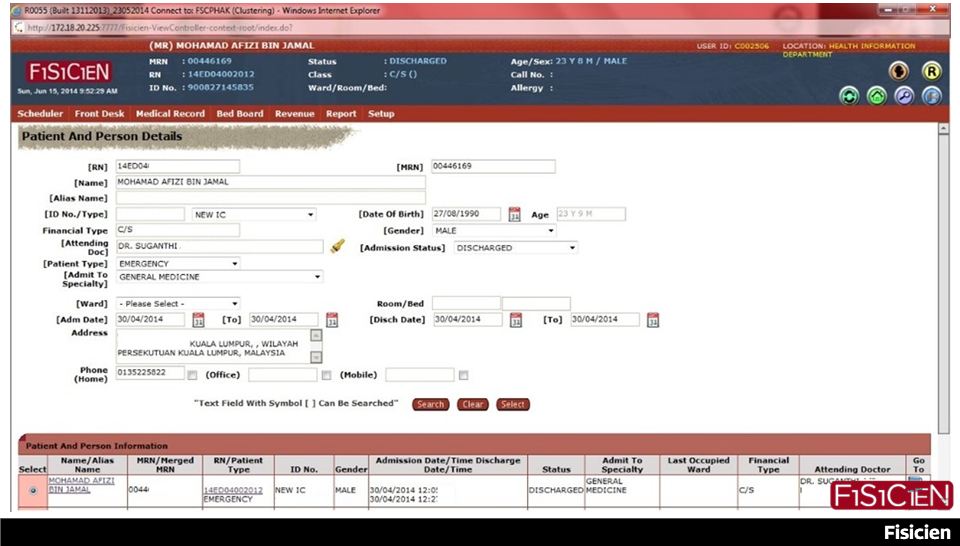

Projects / Work Samples
Portfolio Website

Created a website display coding abilities. It feature a simple layout with a side panel for the introductory information about myself section and scrollable content on the right. Anchor links will facilitate navigation, and a black and white color scheme will maintain simplicity. Mobile-friendliness is a key consideration. Published the website on GitHub for accessibility and collaboration
Portfolios
Technical Skills

1. Salesforce
- Data Management: Efficiently create, update, and manage records in Salesforce. This includes data entry, record editing, and maintaining data quality.
- Customization: Capable of customizing Salesforce Classic to meet specific business needs. This includes creating custom fields, objects, and page layouts. Plus, able to design and customize reports and dashboards.
- Reports and Dashboards: Ability to create and customize reports and dashboards in Salesforce Classic to provide actionable insights and analytics to the team.
- Lead and Opportunity Management: Managed leads and opportunities, including lead conversion and opportunity tracking.
- Data Import and Export: Capable in importing and exporting data using tools like Dataloader, ensuring data accuracy and consistency.
- User Support: Provides user support and training to help colleagues effectively utilize Salesforce Classic, resolve issues, and improve their efficiency.

2. Evergiving
- Web Application Expertise: Using the Waysact web application enabling me to effectively process and manage pledges and oversee the entire donor journey, including establishing detailed donor communication pathways.
- Data Integration: Reconciling data between Evergiving and Salesforce, identifying discrepancies, and ensuring accuracy as well as skilled in manually exporting data from Evergiving to Salesforce.

3. Civis
- Data Management: Navigating Civis Analytics platforms to access and manage data.
- Data Analysis: Able to perform simple calculations and transformations on data fields and familiar with generating basic statistical summaries and insights.
- Report Navigation: Able to locate specific information and insights within reports and experienced in customizing views and filters to focus on relevant data.

4. Asana
- Task Creation: Able in creating tasks within Asana to track various activities and projects.
- Deadline & Task Prioritization Setting: Skilled in setting deadlines and due dates for tasks to ensure timely completion also able to prioritize tasks based on urgency and importance, optimizing workflow efficiency.
- Collaboration & Progress Tracking: Experienced in collaborating with team members by sharing tasks, comments, and updates within Asana as well as monitoring task progress and status updates to stay informed about project developments.
Operation Executive

1. RoadRunner – Enterprise ERP Software
- Financial Management: Used the system to manage involves accurate recording of income and expenses, generating financial reports, and maintaining an up-to-date ledger to optimize revenue.
- Tenant and Owner Data Management: Used system to manage tenants and property owners data and to provide important information such as lease agreements, rent payment history, and financial statements upon request.
- User Training and Support: Provide training and support to Sales Team for mobile version to ensures that all staff are proficient in its use, reducing errors and increasing productivity.

2. Sheng Tai International Apps – Hotel Room Booking Apps
- Point of Contact and Project Involvement: As the primary liaison between users/customers, management and apps vendor. Played a pivotal role in the development of the company's hotel booking app as participate in the User Acceptance Testing (UAT), identifying errors, and relaying feedback to the developer team. Additionally, managed backend administration, ensuring the accuracy and currency of user records.
- App Navigation and Customer Support: Proficient in navigating the hotel booking app, efficiently assist customers with reservations, including browsing available properties, checking room availability, and exploring booking options. Furthermore, provide exceptional customer support by addressing inquiries, resolving issues, and managing special requests to enhance the overall user experience.
- Booking Management: Managing bookings within the app, handling new reservations, modifying existing bookings, and processing cancellations or changes requested by guests. Additionally, collaborated with hotel staff in the backend to accommodate custom bookings, ensuring a personalized and seamless experience for guests.
- Point Redemption and Property Owner Interaction: Responsible for managing point redemption within the app, accurately deduct points earned by property owners when guests redeem them for bookings, ensuring the integrity of the point system.
HR Operation Executive
SAP SuccessFactor
- Performance Management: Utilize performance management modules to set and track performance goals, conduct appraisals, and provide continuous feedback to employees.
- Learning Management: Managed training and development initiatives using SuccessFactors' learning management system includes course creation, assigning training to employees, and tracking their progress and certifications.
- Employee Central: Maintained employee data including personal information, employment history, and organizational structure within SuccessFactors' Employee Central module and ensure accurate and up-to-date records.
Administrative Assistant Grade N19
1. Standard Accounting for Government Agencies (SAGA)
- Financial Reporting: Producing timely and accurate financial statements that adhere to relevant accounting standards. This involves data entry and report generation.
- Regulatory Compliance: Ensuring that financial statements are in full compliance with the accounting standards and regulations that govern financial reporting.
- Technical Proficiency: Possessing the technical skills required to navigate SAGA effectively, including basic troubleshooting and liaising with the developer team for any issues that arise.
- Audit and Control: Implementing audit and control procedures to maintain the accuracy and integrity of financial data.
2. Medical Register Information and Technical System (MeRITS)
- Data Management: Managing healthcare information within the system includes updating and maintaining practitioner records accurately.
- Regulatory Compliance: Ensuring that healthcare regulations and standards, such as continuing education requirements, are meticulously upheld.
- Effective Communication: Liaising with hospital administrators and various stakeholders to provide updates on the status of medical practitioners to ensure seamless coordination and adherence to regulatory standards within the healthcare system.
Medical Records Intern

FiSiCien - Hospital Information System (HIS)
- Medical Records Management: Locating medical records within the FiSiCien system, facilitating quick retrieval for patient care.
- Tracking System Utilization: Utilizing FiSiCien's tracking system to monitor the whereabouts of medical records, whether they are stored in the records room or with attending physicians.
- ICD-10 Coding: Accurately keying in ICD-10 codes in alignment with patient diagnoses, ensuring compliance with medical coding standards.
- Data Maintenance: Maintaining up-to-date patient records within the FiSiCien system, ensuring that all relevant data is readily available for physicians during patient check-ups, thus enhancing efficiency and facilitating informed decision-making.
Professional Development
Continuous Learning
This section is under construction.
Professional Certification
This section is under construction.
Learning Certificates
This section is under construction.
About Me
This section is under construction.